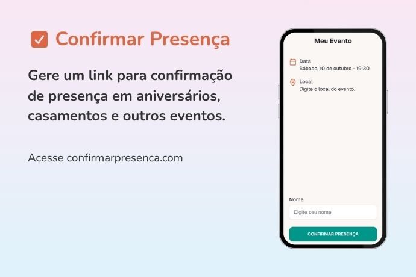

Site para confirmar presença grátis
Crie um link para confirmação de presença online em convites.

Organizar um evento é sempre uma correria — e confirmar quem realmente vai comparecer pode ser uma das partes mais trabalhosas. Pensando nisso, o invertexto.com lançou uma nova ferramenta: o Confirmar Presença, um site gratuito para criar links de confirmação de presença de forma simples e rápida.
Como funciona
Com o Confirmar Presença, você pode criar um link personalizado para o seu evento e enviar diretamente aos convidados ou colocar o link em um convite digital. Ao acessarem o link, eles podem confirmar a presença em poucos segundos — sem precisar preencher formulários longos ou criar contas.
Integração com convites digitais
Hoje em dia, muitas pessoas utilizam plataformas como o Canva para criar convites personalizados e modernos. O Confirmar Presença é o complemento perfeito para esse tipo de convite: basta adicionar o link gerado pela ferramenta em um botão do seu design no Canva. Assim, os convidados podem confirmar presença de forma rápida e elegante, diretamente pelo convite digital.
Integração com convites tradicionais
Além dos convites digitais, o Confirmar Presença também funciona perfeitamente com convites impressos. Basta gerar um QR Code com o link do evento e incluí-lo no layout do convite. Assim, os convidados poderão escanear o código com o celular e confirmar presença instantaneamente.
Por que usar
- Rápido de configurar — crie o evento em menos de um minuto;
- Envio simples — basta compartilhar o link ou incluir no convite digital;
- Sem cadastros ou senhas — acesso direto via e-mail;
- Visualização fácil — acompanhe quem confirmou presença em tempo real.
Exemplo de uso
Ideal para aniversários, casamentos, reuniões e festas em geral, o Confirmar Presença elimina a necessidade de listas manuais e mensagens dispersas. Tudo fica centralizado em um único link, facilitando o controle de convidados.
Experimente gratuitamente
A ferramenta está disponível gratuitamente em confirmarpresenca.com. O projeto ainda está em fase inicial e novas funcionalidades estão sendo planejadas com base no feedback dos usuários.
Se você organiza eventos, experimente agora e simplifique a confirmação de presença dos seus convidados!